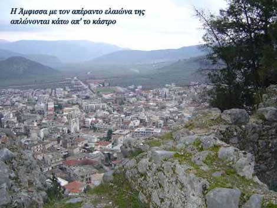

|
Στις μέρες μας το κάστρο της Άμφισσας ξεκουράζεται συντροφιά με θρύλους για ωραίες βασιλοπούλες και ιστορίες για πολεμικά κατορθώματα αλλοτινών χρόνων.
Το κάστρο της Άμφισσας, το κάστρο της Καβάλας, το κάστρο του Ρεθύμνου μαζί με τόσα άλλα κάστρα του ελλαδικού χώρου, ίσως να παρήκμασαν και έχασαν τη σημαντική τους θέση, βρήκαν όμως άλλους τρόπους να υπάρχουν.
Έγιναν σύμβολα της ιστορίας του κάθε τόπου, αφού στα ερείπιά τους είναι χαραγμένη η ιστορία αιώνων.
Ξεπέρασαν με τη φήμη και την επιβλητικότητά τους τα περιορισμένα τους όρια και έδωσαν το όνομά τους σε γειτονικούς οικισμούς. Όπου κι αν ταξιδέψει κανείς θα βρει τοπωνύμια, που θυμίζουν κάστρα. Από το Διδυμότειχο μέχρι τον Πύργο Ηρακλείου και από την Παλαιοκαστρίτσα της Κέρκυρας μέχρι το ακριτικό Καστελόριζο, παντού τα κάστρα δηλώνουν την παρουσία τους.
Πέρασαν στη λογοτεχνία αλλά και στην καθημερινή γλώσσα των ανθρώπων και έγιναν έτσι εκτός από μνημεία της ιστορίας και μνημεία του λόγου. Οι λέξεις κάστρο, οχυρό, επάλξεις, τείχος, πύλη αλλά και λέξεις όπως καταπέλτης, πολιορκία, ιππότης εξακολουθούν να χρησιμοποιούνται και να μας μεταφέρουν, συχνά με άλλη σημασία, στο παρελθόν.
Έγιναν κατοικίες στη Μάνη και έδωσαν ιδέες σε παλιότερες αλλά και σε σύγχρονες κατασκευές.
Είναι τα κάστρα του ελλαδικού χώρου του χτες και του σήμερα.
Κάστρα: Μνήμες επάλληλων εποχών
Το κάστρο - μοναστήρι της Πάτμου
Κάστρο Μήθυμνας (Μόλυβου) Λέσβου
Δυο φρούρια αγκαλιάζουν την παλιά πόλη της Κέρκυρας
Το κάστρο της Άρτας
Το κάστρο των Τρικάλων
Tο Επταπύργιο Θεσσαλονίκης
Κάστρο Χώρας Κυθήρων
|
|